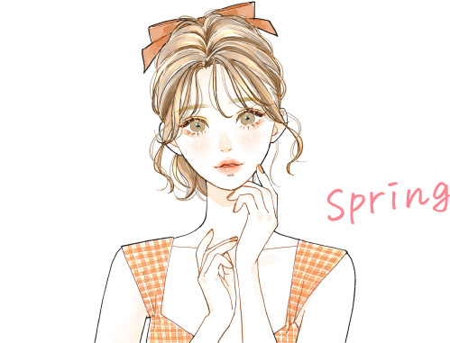
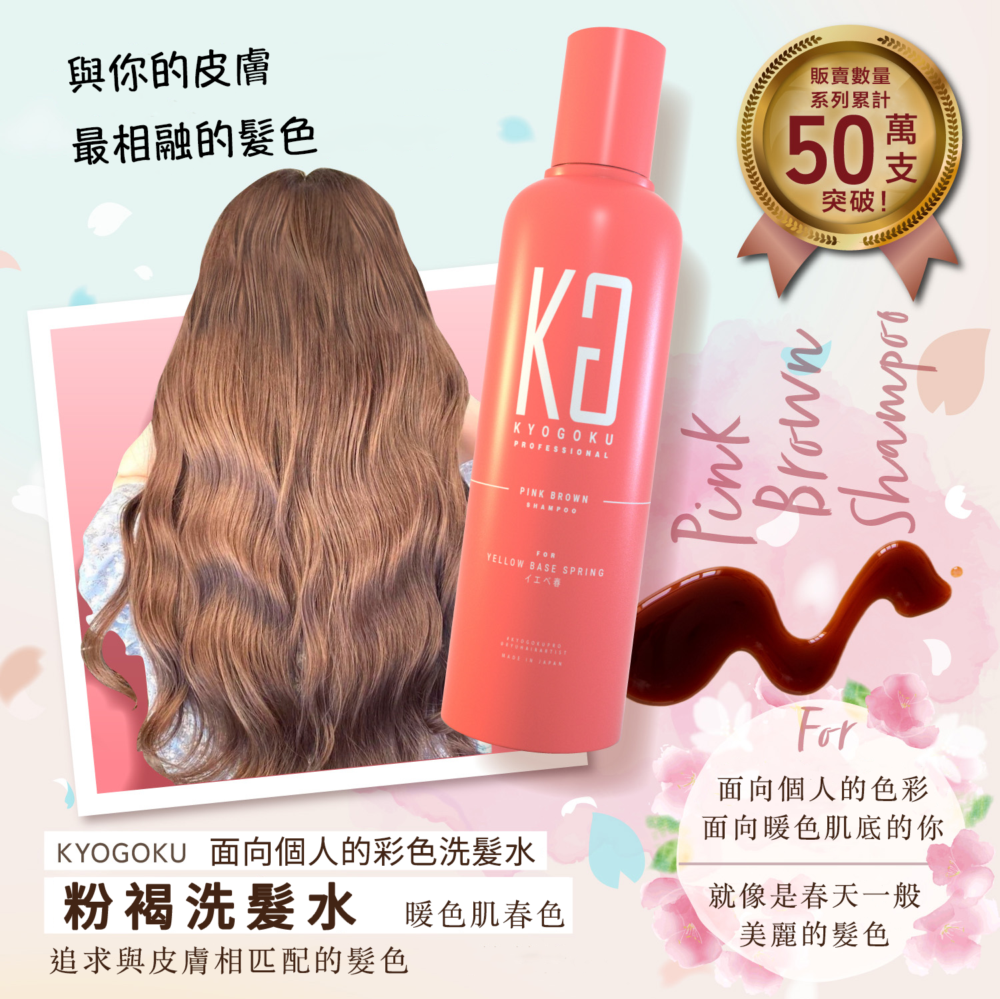

如同春日盛開的繽紛花田，
適合春季型的你，是那種明亮、溫暖又帶有光澤感的色彩。
以奶茶色、焦糖棕、杏桃橘等輕盈色系的髮色，
打造出清新又充滿朝氣的年輕印象！
春季型屬於暖色調的黃基底（Yellow Base），
適合色彩變化豐富、帶有光澤感的明亮色系。
推薦色包含：
鵝黃色、嫩綠色、米白色、蜜桃粉、珊瑚橘、焦糖棕、膚米色、淺天藍等，
這些色彩能帶出你活潑又柔和的一面，
打造出溫柔、甜美、自然系的氛圍美感。

這款針對「**黃調春季型膚色（Yellow Base Spring）」**設計的專屬色洗，
讓妳擁有如春天般溫柔透亮的髮色，
呈現出「粉感奶棕 × 明亮光澤」的年輕感印象！